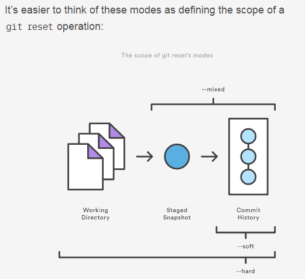

Git 日常使用
Git
推荐一个Git教程
推荐一本书
- Pro Git
Git常用命令
配置提交用户名和邮箱
git config –global user.name “John Doe”
git config –global user.email johndoe@example.com
.gitignore
需要忽略的文件，我们需要将自己的IDE生成的文件，编译文件，缓存文件等加入忽略列表
例如：
Runtime/ 忽略整个Runtime文件夹
.project 忽略IDE生成的临时文件
.gitattributes
可以添加合并的策略 配合使用：git config –global merge.ours.driver true
/Project/Common/Conf/dbconn.php merge=ours 合并分支时，使用当前分支的这个文件
日常操作
- git status 查看工作空间的状态
- git pull origin develop 拉取远程指定分支代码, 建议开发时，每两个小时执行一次
- git add . 将当前目录下所有修改加入提交队列 或者 git add /folder/sub-folder/example.txt 将某个具体文件加入提交队列
- git commit -m ‘提交注释’ 提交代码（到本地队列）
- git push origin develop 推送提交的代码到远程服务器
保存工作空间（需要临时切换分支进行紧急修复，但是当前工作空间有文件修改）
- git stash
- git stash pop
- git stash list
合并分支操作
以合并develop到stage为例，合并之前保持分支无任何文件需要提交，且为最新代码(git pull更新)
- git merge develop 或者 git merge 99daed2(develop分支的某一次提交的版本号)
合并指定的某一次提交到指定分支
以合并develop的某一次提交到stage为例
- git cherry-pick 99daed2(develop分支的某一次提交的版本号)
撤销最近一次提交

- git reset –soft HEAD^1 只是抹去了提交历史，需要重新commit
- git reset –mixed HEAD^1 抹去了提交历史和缓存快照 ，需要重新add, 重新commit
- git reset –hard HEAD^1 抹去了提交历史，缓存快照，工作空间（工作空间的修改全部消失，谨慎，再谨慎）
假定文件未修改
- git update-index –[no]assume-unchanged www/index.php
- git update-index –[no]skip-worktree www/index.php